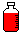
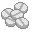

薬局・ドラッグストアでの買い物
薬局でくすりを選ぶ
薬は、薬剤師のいる薬局・ドラッグストアで買う。
栄養ドリンク剤、絆創膏、胃腸薬、コンタクトレンズ保存液、トローチ、うがい薬、湿布など、安全性が高いものは、コンビニで買うことができる。
- 何をお探しですか？
- コンタクトレンズ用の目薬がほしいんですけど。
- ハードレンズをお使いですか？ソフトレンズをお使いですか？
- 使い捨てのやつなんですけど。
- それでしたら、こちらがよろしいかと思いますが。
- すみません。酔い止めがほしいんですが。
- はい。液体やカプセルなどがございますが。
- どちらでもいいんですが、良く効くのをください。
- それでしたら、こちらが一日効果が続くタイプになりますが。
- じゃあ、それを二つください。
- お二つですね。ありがとうございます。
→ 音声ファイルを再生する
- いらっしゃいませ。
歡迎光臨。
- あの、湿疹の薬はどこにありますか？
請問濕疹的要藥在哪裡呢？
- それでしたら、この辺りになりますが。
濕疹的藥在這一帶。
- ええと、軽い湿疹なんですが、どの薬がいいでしょうか？
因為是比較輕微的濕疹、用哪種會比較好呢？
- そうですね。顔なんかならこの薬とか、手や足ならこの薬が良く出ますね。
是那樣阿。假如是臉的話就用這種、手或腳的話這種會比較好。
- うーん。じゃあこっちをください。
那請給我這種。
- ありがとうございます。
非常感謝您。
- 薬剤師【名詞】（やくざいし〔3〕）
- 薬局【名詞】（やっきょく〔0〕）
- ドラッグストア【名詞】（ドラッグストア〔6〕）［外来語］drug-store
［※薬のほかに、化粧品や日用雑貨、食品などを売る店］
- 栄養ドリンク【名詞】（えいようドリンク〔6〕）／ドリンク剤【名詞】（ドリンクざい〔0〕／ドリンクざい〔4〕）［外来語］drink
- 絆創膏【名詞】（ばんそうこう〔0〕）［※「カットバン」、「バンドエイド」、「リバテープ」、「サビオ」など地域によって呼び方がちがう］
- 胃腸薬【名詞】（いちょうやく〔2〕）
- コンタク(トレンズ)【名詞】（コンタクトレンズ〔6〕／コンタクト〔1〕）［外来語］contact lens
［※ハード(コンタクト)レンズ［外来語］hard contact lens／ソフト(コンタクト)レンズ［外来語］soft contact lens／使い捨て(コンタクト)レンズ の区別がある］
- 保存液【名詞】（ほぞんえき〔2〕）
- トローチ【名詞】（トローチ〔2〕）［外来語］troche
- うがい薬【名詞】（うがいぐすり〔4〕）
- 安全性【名詞】（あんぜんせい〔0〕）／↔危険性
- 何をお探しですか？
- 酔い止め【名詞】（よいどめ〔0〕）
- 液体(薬)【名詞】（えきたいやく〔3〕）［※「水薬」ともいう］

【→ 薬の種類】
- カプセル【名詞】（カプセル〔1〕）［外来語］Kapsel［ドイツ語］
【→ 薬の種類】
- （薬が）効く【１類動詞】（きく〔0〕）／↔（薬が）効かない
- 効果が続く
- タイプ【名詞】（タイプ〔1〕）［外来語］type
- お二つ（おふたつ〔4〕）［※「ひとつ」「ふたつ」は「おひとつ」「おふたつ」のようになる。「みっつ」以上は「おみっつ」のようにはならない］
- 湿疹【名詞】（しっしん〔0〕）
- 〜なんか【→ 例を示す表現】
- ［商品］が出る
［※「〜が売れる」という意味をあらわす］
処方箋
医者が患者のために薬の種類や量を書いた書類を処方箋という。
処方箋を持って薬局に行くと、薬剤師がくすりを出してくれる。
大きな病院では病院の中に薬局があるが、中に薬局のない医院などでは指定された薬局（医院の向いや隣など、すぐ近くにあることが多い）に行く。
- あ、これお願いします。
- はい。現在、他に服用中の薬はございますか？
- いえ、特にないですけど。
- そうですか。では、少々お待ちください。
- この処方箋お願いします。
- はい。しばらくお待ちください。……
お待たせしました。こちらがお薬になりますね。
- はい。ありがとうございます。
- こちらの錠剤が１日３回、食後30分以内に飲んでください。こちらのカプセルは寝る前に飲んでください。どちらも１回１錠ずつです。
- ええと、こっちの白いのが３回で、赤いのが１回ですね。
- はい、そうです。袋に書いてありますので。
- わかりました。ありがとうございます。
- お大事に。
- 山田さん。こちらが本日のお薬ですね。
- はい。ありがとうございます。
- 粉薬とカプセルがありますので、朝晩２回飲んでください。
- すみません。これはどういうくすりですか？
- はい。こちらが咳止めと解熱剤で、こちらは鎮痛剤です。
- わかりました。ありがとうございます。
- お大事に。
- 患者【名詞】（かんじゃ〔0〕）
- 病院【名詞】（びょういん〔0〕）【参考→ 病院・診療所】
- 処方箋【名詞】（しょほうせん〔0〕）
- 服用する【３類動詞】（ふくようする〔0〕）／服用中【→ 「ちゅう」と「じゅう」】
- お薬【名詞】（おくすり〔3〕）
- 錠剤【名詞】（じょうざい〔0〕）

- １日［数字］回
［※ほかの語では、「週３回」「月３回」「年３回」のように「１」がつかないのがふつうなので注意すること］
- 食後【名詞】（しょくご〔0〕）［※食事の後に飲む］／食前［※食事の前に飲む］／食間［※食事と食事の間に飲む］
- …ずつ
- 袋【名詞】（ふくろ〔3〕）
- お大事に。
- 粉薬【名詞】（こなぐすり〔3〕）【→ 薬の種類】
- 朝晩【名詞】（あさばん〔1〕）
- 咳止め【名詞】（せきどめ〔0〕）
- 解熱剤【名詞】（げねつざい〔0〕／げねつざい〔3〕）［※「熱冷まし」ともいう］
- 鎮痛剤【名詞】（ちんつうざい〔0〕／ちんつうざい〔3〕）［※「痛み止め」ともいう］